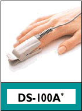

Robbert
Mattijs
Stef Mientki
august 2001
| Lego-Knex
Robbert Mattijs |
Mindstorms BioSensors
Stef Mientki august 2001 |
Warning 1
Always operate the RCX with batteries,
never use a mains adapter because there's a serious risk of electrocution.
Warning 2
Don't draw diagnostic conclusions, because
the quality of the sensors is in general not accurate enough.
Warning 3
Don't scrub the skin before applying electrodes
(although all electrode suppliers will advise you to do), it gives unnessairy
risk of skin damage and all sensor-electronics are designed in such a way
that there's no need for it.
|
|
Electro CardioGram The ECG measures the electric activity of the heart. On the left is an animated picture of the propagation of the electrical activity through the heart. You can easily detect heartrate from the ECG. A trained doctor can recognize all kind off heart defects on the base of very small deviations in the registered signals. The proposed RCX ECG-sensor isn't sensititive enough to display these small deviations. By placing the electrodes on different places around the heart, you can focus on the electrical activity of the different parts of the heart. |
|
|
Blood Pressure This is probably the mostly measured physiological parameter. On the left is an animated picture of the time dependant bloodpressure curve. In general only the maximum bloodpressure (systole) and the minimum bloodpressure (diastole) is measured. Because this sensor requires pneumatics (probably with buffering), a pressure sensor en maybe a soundsensor it's a nice challenge to build it with Lego Mindstorms. With these basic elements it must be possible to build an automatic bloodpressure monitor, which periodically measures the systolic, diastolic and mean bloodpressure. A second challenge might be to measure
the complete bloodpressure curve with the same hardware, but with more
sophisticated software (as Dynapulse
does).
|
| BloodFlow | BloodFlow If you measure the bloodflow, you will see a curve which is very identical to the bloodpressure curve shown above. The main difference is that with bloodflow you cann't measure absolute values, only relative changes in time. The advantage is it simplicity and ease of use, you measure on a lot of different places, must common places are fingers, earlobe and fronthead. Bloodflow can be measured by a reflective light sensor. Red and IR light can penetrate the skin and will reflect on blood (that's why blood is red). It should be a quiet simple sensor which can also be used as a general purpose refelective light sensor, which could even be better in determining colors than the standard mindstroms light sensor. |
| SaO2
 |
Oxygen
Saturation By using a reflective light sensor with
the 2 specific lightcolors, you can determine the percentage oxygen in
the blood.
|
| SC | Skin Conductance (other names: GSR=Galvanic Skin Response, EDA =ElectroDermal Activity, SCR=Skin Conductance Respons, SCL=Skin Conductance Level) Although there's no complete understanding of this parameter, the general thesis states that it measures mainly the filling of the sweet glands and therefor it measures the activity of the sympathetic nerve system. Thereby reflecting both physiological and emotional activity. It's often used in biofeedback systems for relaxation. There's no proof of whatsoever that SC can be used as a lie-detector !!! Michael Gasperi has designed a too simple SCL meter, but his idea of the electrodes could work quiet well. The important design parameters are: first the drive voltage must be <=0.5 Volt, secondly you must measure conductance instead of resistance and third you need to evaluate the fluctuations in time (because it's totally relative). I suppose that you can measure SC with the ECG-sensor and a simple adapter-cable. |
| EOG | Electro OculoGram The eye is an electrical dipol. By placing electrodes horizontal or vertical around the eye you can determine the direction in which the eye is pointed. uni-freiburg
|
| Respiration | Respiration |
| EMG | Eletro MyoGram The EMG measures the electrical activity of the muscles. |
| EEG | Electro EncephaloGram The EEG represents the electrical activity
of the brain.
|